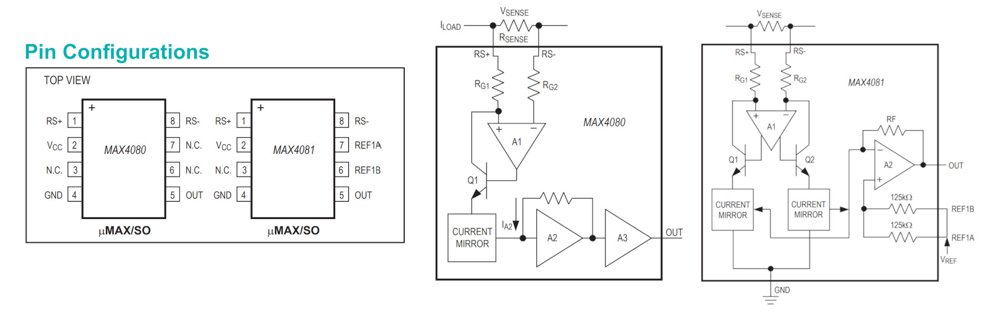
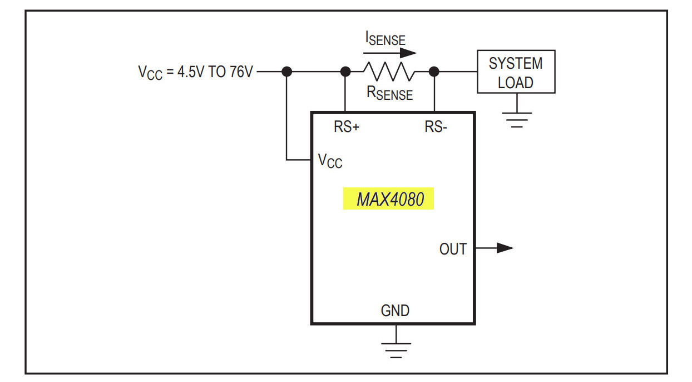
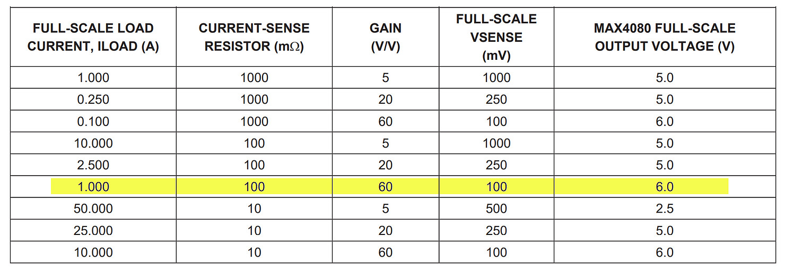
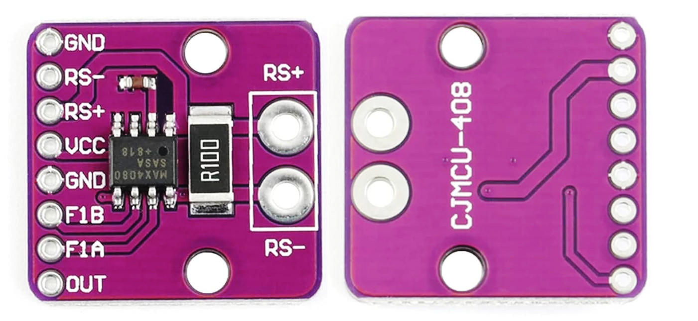
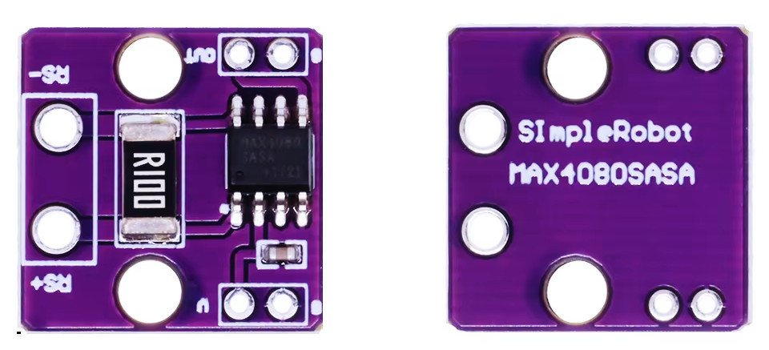
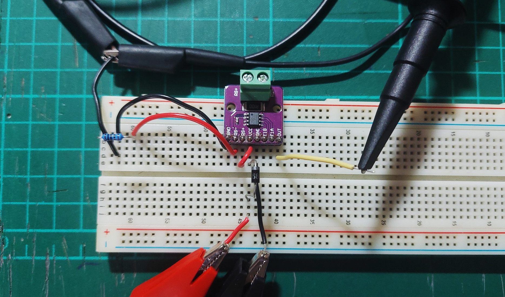
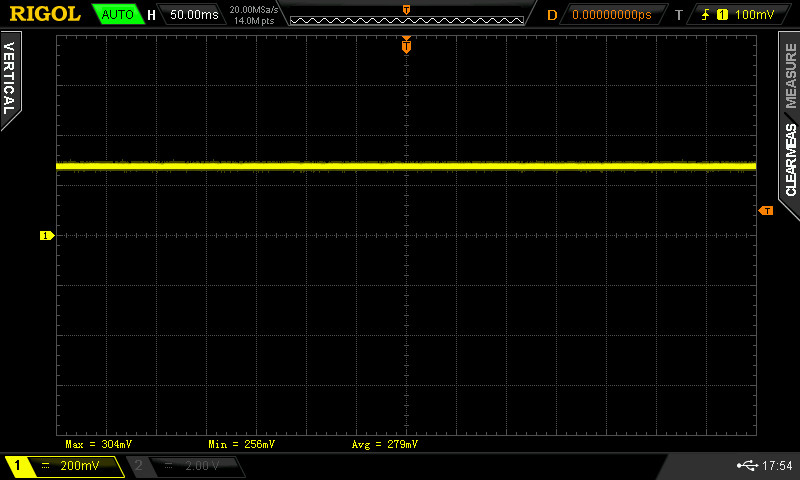
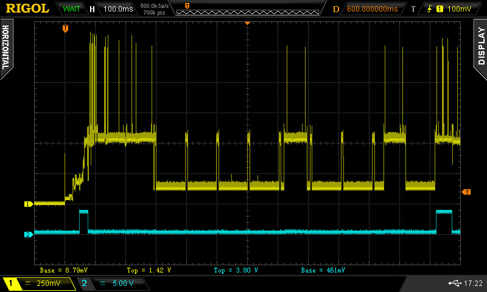

การใช้งานโมดูล MAX4080 Current Sensor#
Keywords: Current Sense Amplifier IC, Current-to-Voltage Converter, High-Side Current Sensing
▷ คุณสมบัติหลักของไอซี MAX4080 / MAX4081#
- MAX4080 / MAX4081 (Datasheet) เป็นไอซีวัดกระแส DC และให้เอาต์พุตเป็นแรงดันไฟฟ้า (สัญญาณแอนะล็อก)
- ผลิตโดยบริษัท Maxim Integrated / Analog Devices Inc. (ADI)
- ใช้วัดปริมาณกระแสไฟฟ้า DC ที่ไหลผ่านตัวต้านทานสำหรับวัดกระแส (เรียกว่า Sense Resistor หรือ Shunt Resistor )
- ใช้กับตำแหน่งการวัดกระแสของโหลดแบบ High-Side Measurement
- แรงดันเอาต์พุตที่ได้คือ แปรผันตรงกับแรงดัน
- (Sense Voltage) คือ แรงดันตกคร่อมที่ตัวต้านทาน เมื่อมีกระแสไหล
- อัตราขขยาย หมายถึง อัตราส่วนของแรงดันเอาต์พุต ต่อแรงดัน
- แบ่งเป็น 2 รุ่น ได้แก่ MAX4080 และ MAX4081:
- MAX4080: วัดกระแสที่ไหลได้ในทิศทางเดียว (Unidirectional) และให้แรงดันเอาต์พุตเป็นบวกเท่านั้น
- MAX4081: วัดกระแสที่ไหลได้สองทิศทาง (Bidirectional) มีขาอินพุตสำหรับแรงดันอ้างอิง (Reference Input A & B) และให้แรงดันเอาต์พุตเป็นบวกและลบได้
- มีตัวเลือกจำแนกตามอัตราขยายคงที่ (Fixed Gain: ) และช่วงแรงดันอินพุต
(Full-Scale Sense Voltage Range):
- MAX408xF: = 5V / V และ = 500mV
- MAX408xT: = 20V / V และ = 250mV
- MAX408xS: = 60V / V และ = 100mV
- แรงดันไฟเลี้ยง (Input Voltage Supply): 4.5V ~ 76V
- ความแม่น (Full-Scale Accuracy): ±0.1% (typical)
- แบนด์วิดท์ (Bandwidth) สำหรับสัญญาณแอนะล็อก-เอาต์พุต: 250kHz (typical)
- แรงดันออฟเซตอินพุต (Input Offset Voltage): 100μV (typical)
- แรงดันเอาต์พุตไม่เป็นศูนย์แม้ว่าแรงดันผลต่างแรงดันอินพุตเป็นศูนย์
▷ ขาไอซี MAX4080 / MAX4081 (8 ขา)#
- Pin 1:
RS+ขาอินพุตกระแส (ฝั่งแรงดันสูงของตัวต้านทาน ) - Pin 2:
VCCแรงดันไฟเลี้ยง - Pin 3:
NCไม่ได้ใช้งาน (Not Connected) - Pin 4:
GNDกราวด์ระบบ - Pin 5:
OUTขาเอาต์พุตแรงดันแอนะล็อก - Pin 6:
REF1Aขาแรงดันอ้างอิง (เฉพาะ MAX4081) - Pin 7:
REF1Bขาแรงดันอ้างอิง (เฉพาะ MAX4081) - Pin 8:
RS-ขาอินพุตกระแส (ฝั่งแรงดันต่ำของตัวต้านทาน )
การต่อใช้งานขา REF1A / REF1B (เฉพาะ MAX4081)
- โดยทั่วไป ขา
REF1AและREF1Bของ MAX4081 จะต่อเข้าด้วยกันกับแรงดันไฟฟ้าคงที่ภายนอกเหมือนกัน และแรงดันอ้างอิงที่ได้สำหรับเอาต์พุตจะเป็นครึ่งหนึ่ง เช่น ถ้าต่อขาทั้งสองกับ +5V จะได้แรงดันอ้างอิง +2.5V - แรงดันอ้างอิงสำหรับเอาต์พุตใช้เป็นค่ากลาง (Mid-point Value) ของสัญญาณเอาต์พุต
ทำให้สามารถวัดกระแสได้ทั้งสองทิศทาง
- แรงดันเอาต์พุต จะได้เท่ากับแรงดันอ้างอิง ถ้ากระแสที่ไหลเท่ากับศูนย์
- ถ้ากระแสไม่เป็นศูนย์ และไหลจากขา
RS+ไปยังRS-แรงดันเอาต์พุตจะเพิ่มขึ้นจากแรงดันอ้างอิง - ถ้ากระแสไหลในทิศทางจากขา
RS-ไปยังRS+แรงดันเอาต์พุตจะลดลงจากแรงดันอ้างอิง
- เหมาะสำหรับการนำไปต่อกับขาสัญญาณอินพุตของ ADC ที่ต้องการแรงดันอินพุตในช่วงที่เป็นบวกเท่านั้น เช่น 0 ~ 5V ก็ใช้แรงดันอ้างอิง 2.5V
- แต่ถ้าต่อเข้ากับ GND (แรงดันอ้างอิงเป็น 0) เช่น ถ้าไม่ต้องการวัดกระแสย้อนกลับ
จะให้ผลเหมือนกับการทำงานของไอซี MAX4080 ซึ่งไม่มีขา
REF1AและREF1B
บล็อกไดอะแกรมของไอซี MAX408x แสดงให้เป็นองค์ประกอบของวงจรที่สำคัญ และความแตกต่างระหว่าง MAX4080 และ MAX4081

รูป: ขาของไอซี MAX4080/4081 และบล็อกไดอะแกรมของวงจรภายใน

รูป: ตัวอย่างการต่อวงจรใช้งานสำหรับไอซี MAX4080
การวัดกระแสได้ทั้งสองทิศทาง: วงจรภายในของ MAX4081 นั้นแตกต่างจากกรณีของ MAX4080 เนื่องจากรองรับการไหลของกระแสได้ทั้งสองทิศทาง และมีการเพิ่มแรงดันอ้างอิงสำหรับแรงดันเอาต์พุต
หลักการทำงานของวงจรภายใน MAX4080 โดยสรุปคร่าว ๆ มีดังนี้
- กระแสที่ไหลไปยังโหลด ผ่านตัวต้านทาน ทำให้เกิดแรงดันตกคร่อม
ระหว่างขา
RS+และRS- - วงจรออปแอมป์ A1 มีขาอินพุต และ เป็นขา Non-Inverting และ Inverting Input ตามลำดับ และมีตัวต้านทานอนุกรม และ ต่ออยู่ด้วย ตามลำดับ
- เมื่อแรงดัน มากกว่า 0V จะทำให้มีกระแสไหลผ่านตัวต้านทาน ไปยังทรานซิสเตอร์ Q1 เข้าที่ขาคอลเลกเตอร์ หรือ กระแสคอลเลกเตอร์
- เอาต์พุตของออปแอมป์ A1 จะมีการปรับระดับแรงดัน และควบคุมแรงดันที่ขาเบสของ Q1
- เนื่องจากกระแสเบส ของ Q1 มีปริมาณน้อยมาก ดังนั้นกระแสที่ไหลออกจากขาอิมิตเตอร์ ของทรานซิสเตอร์ Q1 จะได้ประมาณ และจะนำไปใช้กับวงจร Current Mirror
- วงจร Current Mirror ("วงจรสะท้อนกระแส") จะสร้างกระแส IA2 ตามปริมาณกระแสที่ไหลผ่านทรานซิสเตอร์ Q1 และไหลผ่านตัวต้านทานที่ต่อกับออปแอมป์ A2
- วงจร A2 และ A3 ทำหน้าที่เป็นบัฟเฟอร์และขยายแรงดันตามลำดับ เพื่อสร้างแรงดันเอาต์พุต
แนวทางการวิเคราะห์วงจรเพื่อหาความสัมพันธ์ระหว่างกระแส และ
โดยมีสัญลักษณ์
- และ : กระแสที่ไหลผ่านตัวต้านทาน และ ตามลำดับ
-
และ : แรงดันที่ขา
RS+และขาRS-ของ MAX408x ตามลำดับ - และ : แรงดันที่ขาอินพุตทั้งสองของออปแอมป์ A1
ถ้าให้ (มีค่าใกล้เคียงกันมาก ๆ และประมาณค่าให้เท่ากัน) ก็สามารถเขียนสมการใหม่ได้ดังนี้
เนื่องจาก มีค่าความต้านทานต่ำกว่า หลายเท่า และ (น้อยกว่าหลายเท่า) ดังนั้นในการสร้างสัญญาณเอาต์พุตเป็นแรงดันไฟฟ้าโดย MAX408x จะต้องมีการแปลงกระแสให้เป็นแรงดันไฟฟ้า (Current-to-Voltage Conversion) และมีการขยายสัญญาณด้วย (Signal Amplification)
จากตารางการใช้งานไอซี MAX4080 ถ้าเลือกใช้ไอซีที่มีอัตราขยาย 60 มีช่วงแรงดัน ไม่เกิน 100mV และใช้ตัวต้านทาน 100 mΩ หากมีกระแสไหลสูงสุด 1000mA จะได้แรงดัน เท่ากับ 0.1V และเมื่อคูณกับอัตราขยาย จะได้แรงดันเอาต์พุต 0.1V x 60 = 6V ในกรณีนี้ จะต้องเลือกใช้แรงดันไฟเลี้ยง VCC ให้สูงกว่า 6V
แต่ถ้าใช้แรงดันไฟเลี้ยง VCC เท่ากับ +5V หรือ +3.3V กระแสโหลดสูงสุด ก็จะต้องลดลง เพื่อให้แรงดันเอาต์พุตไม่เกิน VCC และให้เหมาะสมกับการนำไปใช้กับวงจร ADC เป็นต้น

รูป: ตารางการใช้งาน MAX4080
▷ โมดูล MAX4080#
การใช้ไอซี MAX4080 อาจจะไม่สะดวกในการต่อวงจรใช้งาน เช่น การต่อวงจรทดลองบนเบรดบอร์ด และดังนั้นก็แนะนำให้ใช้โมดูล MAX4080 Breakout เช่น โมดูล CJMCU-408 จากประเทศจีน
- ใช้ไอซี MAX4080SASA
- ใช้ตัวต้านทาน R_SENSE:
R100หรือ 0.1Ω (±1%, 2W, 2512)


รูป: ตัวอย่างโมดูล MAX4080 Breakout
▷ การทดลองวัดกระแสโดยใช้ตัวต้านทานเป็นโหลด#
ถัดไปเป็นตัวอย่างการทดลองใช้งานโมดูล MAX4080 โดยใช้ตัวต้านทาน 100Ω เป็นโหลดไฟฟ้า และมีการต่อวงจรทดลองดังนี้
- วัดค่าความต้านทานที่ใช้เป็นโหลดด้วยมัลติมิเตอร์ได้ 99.3Ω
- ใช้แหล่งจ่ายแรงดันไฟฟ้าคงที่
VINวัดได้ 5.2V และต่อผ่านไดโอด Schottky ไปยังขาVCCของโมดูล MAX4080 และขาGNDของโมดูล MAX4080 กับGNDของแหล่งจ่าย - ต่อขา
RS+เข้ากับVCCของ MAX4080 - ต่อขาด้านหนึ่งของตัวต้านทานกับขา
RS-ของ MAX4080 และขาอีกด้านหนึ่งไปยังGNDของแหล่งจ่าย - วัดแรงดันที่ขา
RS-หรือ แรงดันตกคร่อมที่ตัวต้านทานได้ 4.703V ดังนั้นจึงคำนวณปริมาณกระแสที่ไหลได้เท่ากับ 4.703V / 99.3 Ohm = 47.36mA - วัดแรงดัน ได้เท่ากับ 4.61mV เมื่อนำไปคูณกับค่า Gain = 60
จะได้ 4.61mV x 60 = 276.6mV และวัดแรงดันเอาต์พุตที่ขา
VOUTด้วยมัลติมิเตอร์ ได้เท่ากับ 276.6mV

รูป: การต่อวงจรทดลอง
โดยทั่วไปแล้ว หากกระแสไฟฟามีการเปลี่ยนแปลงปริมาณค่อนข้างช้า ก็สามารถใช้มัลติมิเตอร์วัดแรงดันเอาต์พุตได้ แต่ถ้าปริมาณกระแสเปลี่ยนแปลงอย่างรวดเร็วในเชิงเวลา ก็จะต้องใช้วิธี เช่น การต่อเข้ากับ ADC (Analog-to-Digital Converter อ่านและบันทึกค่าด้วย MCU หรือ จะใช้ออสซิลโลสโคปดูการเปลี่ยนแปลงเชิงเวลาของสัญญาณเอาต์พุต เป็นต้น

รูป: การวัดแรงดันเอาต์พุตด้วยออสซิลโลสโคป (วัดค่าเฉลี่ยของสัญญาณเอาต์พุตได้ 279mV)

รูป: ตัวอย่างการวัดสัญญาณเอาต์พุตโดยใช้ MAX4080 ในกรณีที่มีการเปลี่ยนแปลงของกระแสโหลดอย่างรวดเร็ว
▷ กล่าวสรุป#
บทความนี้ได้นำเสนอข้อมูลและการใช้งานของไอซีและโมดูล MAX4080/4081 พร้อมตัวอย่างการทดลองวัดปริมาณกระแสไฟฟ้าโดยใช้ตัวต้านทานเป็นโหลดไฟฟ้า โมดูลนี้สามารถนำไปประยุกต์ใช้ในการวิเคราะห์การใช้กระแสไฟฟ้า โดยใช้การวัดกระแสแบบ High-Side (การวัดฝั่งแรงดันไฟเลี้ยง) รวมถึงการตรวจสอบการใช้พลังงานของอุปกรณ์อิเล็กทรอนิกส์ต่าง ๆ ได้ โดยให้เอาต์พุตเป็นสัญญาณแอนะล็อกที่แปรผันตามกระแสที่ไหลผ่านโหลด
This work is licensed under a Creative Commons Attribution-ShareAlike 4.0 International License.
Created: 2025-04-30 | Last Updated: 2025-05-07